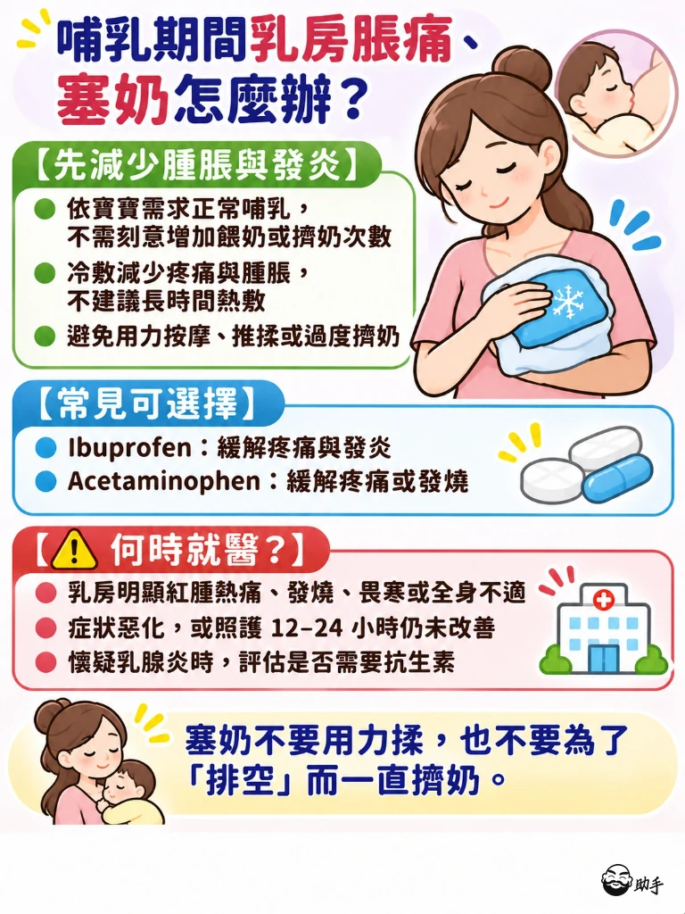
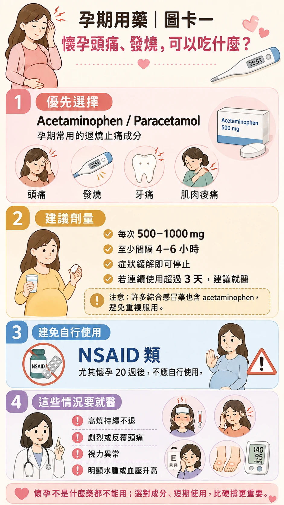
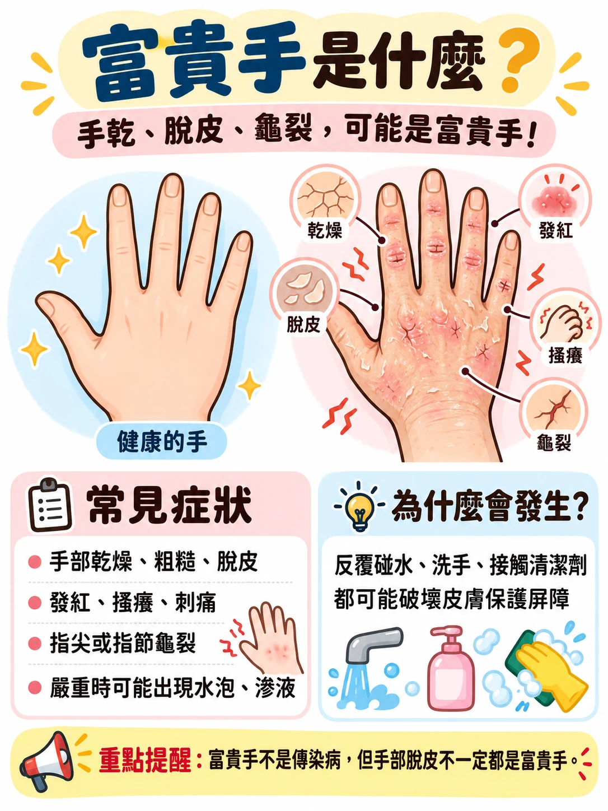
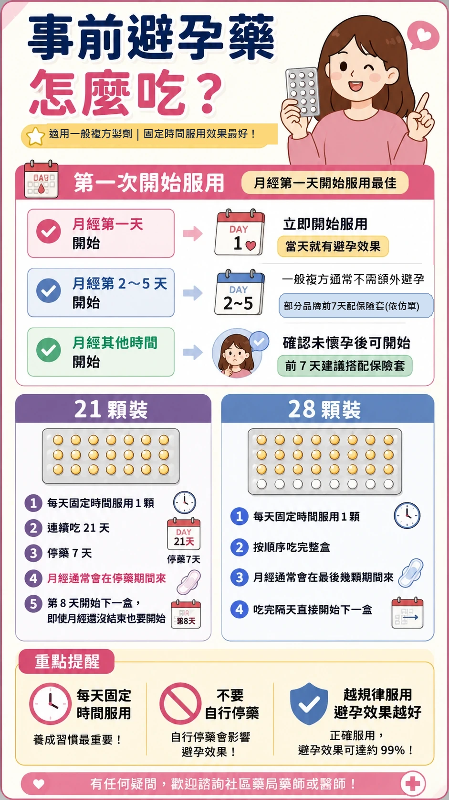
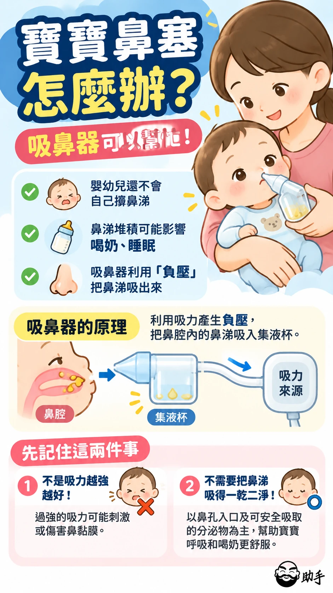

媽媽專屬
餵母乳、懷孕能吃什麼藥？手乾裂、長斑、產後不適怎麼照顧？藥師把媽媽常問的問題整理在這裡，點主題展開看圖卡。
懷孕與哺乳

哺乳期間小毛病
餵母乳時頭痛、感冒、塞奶，哪些藥可以用、要不要停餵。

懷孕期間小毛病
孕吐、頭痛、感冒、便祕，懷孕時能用什麼藥。
媽媽的身體照護

富貴手
洗奶瓶、做家事，手乾裂脫皮怎麼照顧。
經期、避孕與驗孕
經期・排卵・預產期計算器推算下次月經、排卵日與預產期
避孕
事前、事後避孕藥怎麼吃，保險套怎麼用。
媽媽常見問題
餵母乳可以吃普拿疼嗎？要停餵嗎？
可以。Acetaminophen（普拿疼）與 Ibuprofen（布洛芬）都是哺乳期常用的退燒止痛藥，一般劑量多數情況不需要停餵，可在餵奶後服藥。注意綜合感冒藥常含 Acetaminophen，避免重複吃。 看圖卡：哺乳期間頭痛、發燒可以吃什麼？
哺乳期間感冒，可以吃綜合感冒藥嗎？
不建議自行吃。許多綜合感冒藥含偽麻黃鹼、甲基麻黃鹼（可能讓奶量變少）或容易嗜睡的抗組織胺，最好請藥師依症狀挑單一成分。 看圖卡：哺乳期間鼻塞、流鼻水可以用什麼？
塞奶要冷敷還是熱敷？
建議冷敷。餵奶後用毛巾包冰敷袋冷敷可減輕腫脹與疼痛，長時間熱敷可能讓發炎更明顯；不要用力按摩或一直擠奶。乳房紅腫熱痛合併發燒，要就醫。 看圖卡：哺乳期間乳房脹痛、塞奶怎麼辦？
懷孕頭痛可以吃什麼止痛藥？
可優先考慮 Acetaminophen，以最低有效劑量、最短時間使用。NSAID 類止痛藥（例如布洛芬），尤其懷孕 20 週後，不應自行使用。劇烈頭痛、視力異常或血壓升高要就醫。 看圖卡：懷孕頭痛、發燒可以吃什麼？
做家事手一直乾裂脫皮，是富貴手嗎？
富貴手通常是手部濕疹的俗稱，反覆碰水、洗碗、接觸清潔劑都可能誘發。洗手後立即擦護手霜、做家事戴手套是基本照護。單手脫皮或合併香港腳，可能是黴菌感染，應給醫師評估。 看圖卡：富貴手是什麼？
臉上出現對稱的大片褐色斑，是肝斑嗎？
肝斑常見於雙頰、額頭與上唇，通常左右對稱，日曬與荷爾蒙變化都可能參與形成，而且容易反覆。持續防曬是基本功；斑點快速改變或出血，應看皮膚科。 看圖卡：肝斑與痘印色素沉澱
忘記吃避孕藥怎麼辦？
一般複方口服避孕藥延誤未滿 48 小時，儘快補服該顆，下一顆照原時間吃；達 48 小時（連續漏兩顆以上）的處理不同，可能需要加用保險套 7 天。不確定時請問藥師。 看圖卡：忘記吃避孕藥怎麼辦？
驗孕筆什麼時候驗最準？
月經預計來潮後再驗準確度較高；週期不規則，可在性行為後約 2～3 週檢測。太早驗可能因 hCG 濃度不足出現偽陰性。 看圖卡：驗孕筆什麼時候驗最準？
以上答案整理自各題連結的圖卡，詳細說明與參考資料請見圖卡頁。更新日期：
延伸閱讀
本頁以媽媽自己為主；寶寶的照護整理在這裡供延伸閱讀。

寶寶照護
寶寶發燒、鼻塞、拉肚子與生長發育。